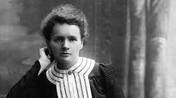

Dr. Marie Curie
The great female scientist

Marie Salomea Skłodowska–Curie
- Marie Salomea Skłodowska–Curie born Maria Salomea Skłodowska, 7 November 1867 – 4 July 1934) was a Polish and naturalized-French physicist and chemist who conducted pioneering research on radioactivity.
- She was the first woman to win a Nobel Prize, the first person to win a Nobel Prize twice, and the only person to win a Nobel Prize in two scientific fields. Her husband, Pierre Curie, was a co-winner of her first Nobel Prize, making them the first-ever married couple to win the Nobel Prize and launching the Curie family legacy of five Nobel Prizes.
- She was, in 1906, the first woman to become a professor at the University of Paris.
- She studied at Warsaw's clandestine Flying University and began her practical scientific training in Warsaw.
- In 1891, aged 24, she followed her elder sister Bronisława to study in Paris, where she earned her higher degrees and conducted her subsequent scientific work.
- In 1895 she married the French physicist Pierre Curie, and she shared the 1903 Nobel Prize in Physics with him and with the physicist Henri Becquerel for their pioneering work developing the theory of "radioactivity"—a term she coined
- Marie won the 1911 Nobel Prize in Chemistry for her discovery of the elements polonium and radium, using techniques she invented for isolating radioactive isotopes.
- Under her direction, the world's first studies were conducted into the treatment of neoplasms by the use of radioactive isotopes.
- She founded the Curie Institute in Paris in 1920, and the Curie Institute in Warsaw in 1932; both remain major medical research centres. During World War I she developed mobile radiography units to provide X-ray services to field hospitals.
- She named the first chemical element she discovered polonium, after her native country.
- Marie Curie died in 1934, aged 66, at the Sancellemoz sanatorium in Passy (Haute-Savoie), France, of aplastic anemia likely from exposure to radiation in the course of her scientific research and in the course of her radiological work at field hospitals during World War I.
- in 1995 she became the first woman to be entombed on her own merits in the Paris Panthéon,[13] and Poland declared 2011 the Year of Marie Curie during the International Year of Chemistry.